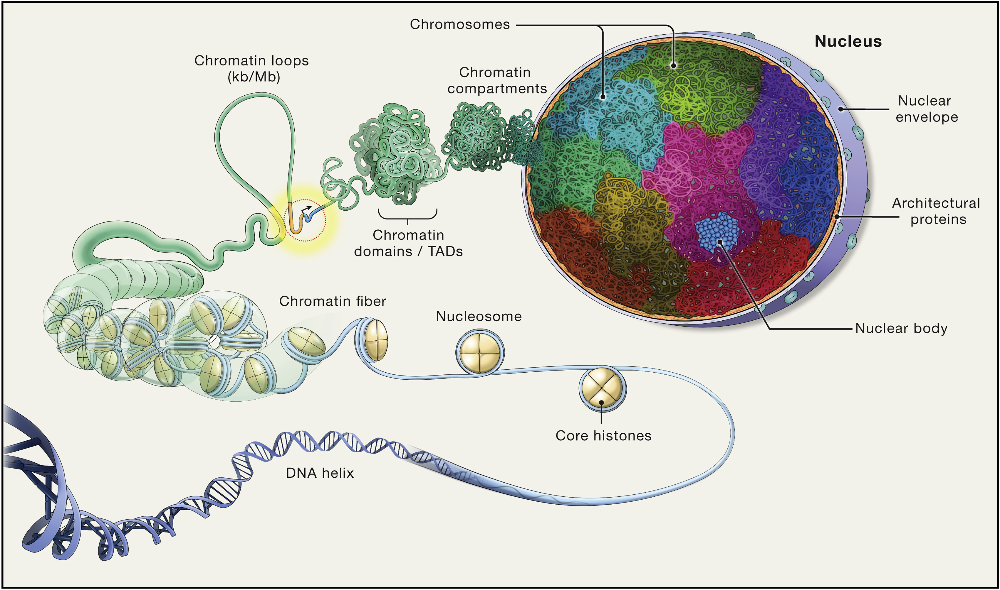

Chromatin Architecture and Selection on X
Thesis Defence: Msc. Project 2024
Søren Jørgensen
Stud. MSc. Bioinformatics, BiRC
Kasper Munch (Supervisor)
Associate Professor, BiRC
January 30, 2025
Overview
- Research question
- Reduced Diversity on X
- Rationale
- Chromosome Architecture
- Compartments
- TADs
- Compartment Inference
- Genomic Comparison
- Regions under selection
- Compartment calls
- Test results
- Implications
- Future
All code, figures, analyses, and slides are available at
https://munch-group.org/hic-spermatogenesis/
Introduction and Background
What have we done
Analyzed the 3D chromatin structure on X during spermatogenesis in rhesus macaque and correlating to low-diversity regions in baboons and humans, leveraging a comprehensive reproducible computational framework.
Reduced Diversity on X
Megabase-spanning regions of reduced diversity across great apes indicate strong selection, reflecting evolutionary dynamics that possibly interplay with structural features.
Rationale of analyzing chromatin architecture
Architecture modulates gene regulation and meiosis. Could these high-level structural features underlie the low-diversity regions?
Molecular Biology: Chromosome Architecture
Chromosome Architecture in the Nucleus
- Balance compact storage with functional accessibility for essential processes: replication and gene expression.
Levels of Organization
- Double Helix
- Nucleosomes
- Chromatin
- Fibers
- Loops
- Domains (TADs)
- Compartments

Figure from (Misteli 2020)
Molecular Biology: Chromatin Architecture
Chromosome Architecture in the Nucleus
- Compact storage
- Accessibility
Chromatin
- Fibers
- Loops
- Domains (TADs)
- Compartments
Figure from (Misteli 2020)
Molecular Biology: Compartments
Topologically Associating Domains (TADs)
- Self-interacting chromatin domains that insulate regulatory interactions.
- Act as boundaries to regulate enhancer-promoter interactions.
A/B Compartments
- A-Compartments: Gene-rich, active, euchromatin regions.
- B-Compartments: Gene-poor, inactive, heterochromatin regions.
Key differences
- Method of inference
- Size
Figure from (Misteli 2020)
Hi-C (Chromosome Conformation Capture)
How to capture chromosome conformation:
From (WikiCommons:Prakrutiuday)
Hi-C (Chromosome Conformation Capture)

Hi-C (Chromosome Conformation Capture)
Inference Methods: A/B compartments
- PCA: Captures compartmentalization by minimizing the error between observed and predicted frequencies
- PC1: Reflects A/B compartment assignments, sign (+/-) indicates type (A/B).
- How?
- Assign each bin \(x\) a compartment value \(c(x)\).
- Define interaction score as \(I(x,y) = c(x)c(y)\), with \(I(x,y) > 0\) for same-compartment loci.
- Optimize \(c(x)\) via PCA to minimize MSE between observed interactions and \(c(x)c(y)\).
- Use GC content to orient the eigenvector, assigning loci to A (\(c(x) > 0\)) or B (\(c(x) < 0\)).
- Constrain MSE minimization to a genomic range (e.g., chromosome arms).
Methods
- Infer compartments using HiCExplorer or Open2C
- Try to reproduce the compartments from Wang et al. (2019) in fibroblast
- Success with Open2c:

Results: Compartments
- PC1 compartments were obtained
- Tissue: fibroblast, spermatogonia, pachytene spermatocyte, round spermatid, sperm
- Resolutions: 100kb, 500kb, ps500kb
- Viewframe: full, arms, 10Mb windows
- PC1 tracks for each tissue type: 9
Results: Compartments
- PC1 compartments were obtained
- Tissue: fibroblast, spermatogonia, pachytene spermatocyte, round spermatid, sperm
- Resolutions: 100kb, 500kb, ps500kb
- Viewframe: full, arms, 10Mb windows
Results: Compartments
- PC1 compartments were obtained
- Tissue: fibroblast, spermatogonia, pachytene spermatocyte, round spermatid, sperm
- Resolutions: 100kb, 500kb, ps500kb
- Viewframe: full, arms, 10Mb windows
- Define sets of intervals
- A 200kb transition zone between A/B compartments
- A 1bp limit between A/B compartments
Genomic Intervals
Introducing the regions of selection
- Baboons: Disproportionate parent ancestry on X
- Either olive baboon (P. anubis) or hamadryas (P. hamadryas)
- Human: ECH90 regions
- Extraordinary selective sweeps on X (Extended Common Haplotypes 90% peak). From Skov et al. (2023)

Methods: Comparing Genomic Intervals
How to compare intervals
Jaccard test
- Calculate the Jaccard index between two sets of segments, \(Q\) and \(A\) \[ J(Q, A) = \frac{|Q \cap A|}{|Q \cup A|} \]
- Bootstrap \(Q\): \(shuffle+reorder\) while conserving segment \(lengths\)
Proximity test
- Remove overlapping segments between \(Q\) and \(A\)
- Calculate a proximity index between two sets of segments, \(Q\) and \(A\). \[ P(Q, A) = \frac{1}{|Q|} \sum_{q \in Q} \min_{a \in A} d(q, a) \]
- Bootstrap \(Q\) in the same manner
Results: Comparing Genomic Intervals
- ECH90 overlaps with fibroblast and round spermatid 200kb transition zones (\(p \sim 0.01\))
- What happens when only using the limits?
- \(Q\): full ECH, baboon limits (separate and concatenated groups)
- \(A\): PC1 limits (arms, 10Mb)
| tissue | Fb | Spa | Pac | RS | Sperm | ||
|---|---|---|---|---|---|---|---|
| viewframe | test | query | |||||
| 10Mb | jaccard | ECH90 | 0.021 | 0.006 | nan | nan | 0.048 |
| proximity | olive | nan | nan | nan | nan | 0.016 | |
| olivehama | nan | 0.019 | 0.012 | nan | 0.001 | ||
| arms | jaccard | ECH90 | 0.017 | 0.006 | 0.005 | 0.028 | nan |
| proximity | olivehama | nan | nan | 0.036 | nan | nan |
\(\leftarrow 2\times 40\) tests. What about multiple testing?
Results: Comparing Genomic Intervals
Multiple testing correction
Uncorrected:
| tissue | Fb | Spa | Pac | RS | Sperm | ||
|---|---|---|---|---|---|---|---|
| viewframe | test | query | |||||
| 10Mb | jaccard | ECH90 | 0.021 | 0.006 | nan | nan | 0.048 |
| proximity | olive | nan | nan | nan | nan | 0.016 | |
| olivehama | nan | 0.019 | 0.012 | nan | 0.001 | ||
| arms | jaccard | ECH90 | 0.017 | 0.006 | 0.005 | 0.028 | nan |
| proximity | olivehama | nan | nan | 0.036 | nan | nan |
Benjamini-Hochberg (FDR) corrected
| tissue | Fb | Spa | Pac | RS | Sperm | ||
|---|---|---|---|---|---|---|---|
| viewframe | test | query | |||||
| 10Mb | jaccard | ECH90 | 0.043 | 0.020 | nan | nan | nan |
| proximity | olivehama | nan | nan | nan | nan | 0.038 | |
| arms | jaccard | ECH90 | 0.041 | 0.020 | 0.020 | 0.046 | nan |
Implications and Unanswered Questions
- Assuming the results are real
- What does it mean that the regions correlate
- The ECH paper: hinting to possible mechanisms aiding a fitness-based model
- Structural features could aid in preserving certain genetic elements
- Some tissues are connected to both ECH and baboon regions
- Does fibroblast rule out the implication in spermatogenesis?
- Macaque is often used as an outgroup, but not here
- Reproduce in great ape data
Reproducibility
- Can we reproduce in other organisms?
- The question I have been waiting for
| Tool | Description |
|---|---|
| Jupyter | Interactive coding environment for analysis and development (notebooks are natively rendered with Quarto) |
| Quarto | A Quarto Manuscript project nested inside a Quarto Book for rendering html (website) and PDF (manuscript) from Markdown via Pandoc. Supports direct embedding of output from Jupyter Notebook cells (plots, tables). |
| Conda | For managing software requirements and dependency versions reproducibly. |
| git | Version control and gh-pages branch for automated render of Quarto project |
| GitHub | Action was triggered on push to render the project and host on munch-group.org |
| gwf | Workflow manager to automate the analysis on a HPC cluster, wrapped in Python code. workflow.py currently does everything from .fastq to .cool, but notebooks can be set to run sequentially as part of the workflow as well. |
Conclusive thoughts and perspectives
- Previous results
- No such comparison has been performed before (I might be deceived)
- Find a way to weight the compartments based on metadata
- We should investigate TADs as well
- We should analyze the genes at the coordinates of correlation
- Chromosome X is an obvious target
- I have only looked at intra-chromosomal interactions
Extra slides
Inference Methods: TADs
Call TADs using interaction data summarized into a 1D genomic profile
- Insulation Score: Sliding window along the main diagonal
- Boundaries: Find local minima along the genome
- Define threshold: define a threshold for peak prominence
- Borrow Otsu or Li boundaries from image analysis
- Optional: use CTCF enrichment to guide the thresholding
Many methods exist for calling TADs \(\rightarrow\) different results from different approaches
“[…] an example of how adjacent boundaries calculated with cooltools can specify a set of intervals that could be analyzed as TADs, […]“
—cooltools documentation
References
Misteli, Tom. 2020. “The Self-Organizing Genome: Principles of Genome Architecture and Function.” Cell 183 (1): 28–45. https://doi.org/10.1016/j.cell.2020.09.014.
Skov, Laurits, Moisès Coll Macià, Elise Anne Lucotte, Maria Izabel Alves Cavassim, David Castellano, Mikkel Heide Schierup, and Kasper Munch. 2023. “Extraordinary Selection on the Human X Chromosome Associated with Archaic Admixture.” Cell Genomics 3 (3): 100274. https://doi.org/10.1016/j.xgen.2023.100274.
Wang, Yao, Hanben Wang, Yu Zhang, Zhenhai Du, Wei Si, Suixing Fan, Dongdong Qin, et al. 2019. “Reprogramming of Meiotic Chromatin Architecture During Spermatogenesis.” Molecular Cell 73 (3): 547–561.e6. https://doi.org/10.1016/j.molcel.2018.11.019.
WikiCommons:Prakrutiuday. “HiCschematic (Cutout).” https://commons.wikimedia.org/wiki/File:HiCschematic.png.
{kind=link}

Chromatin Architecture and Selection on X • Søren Jørgensen • MSc. Bioinformatics • munch-group.org/hic-spermatogenesis